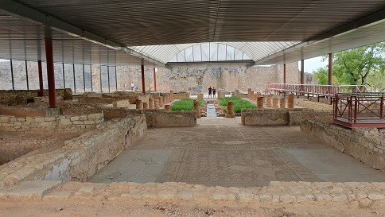
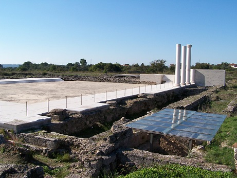
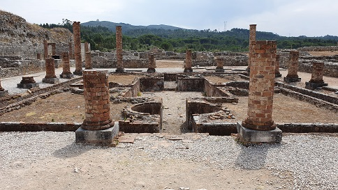
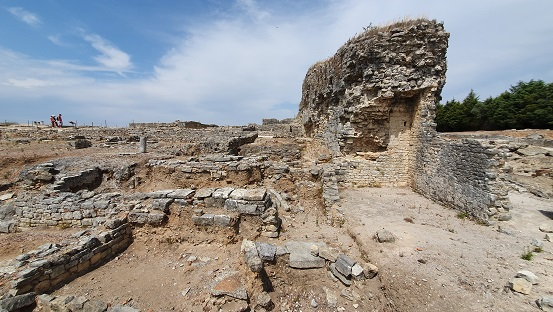
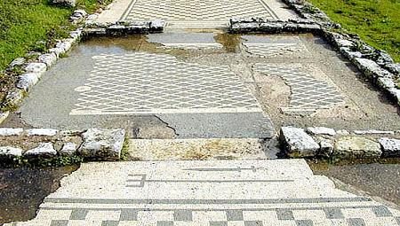
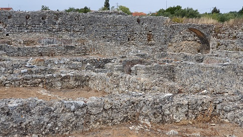
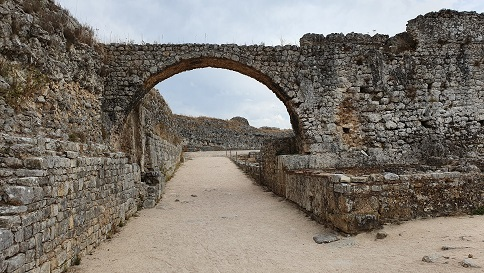
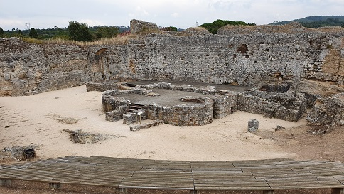
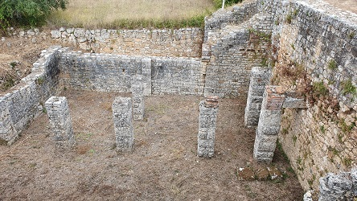
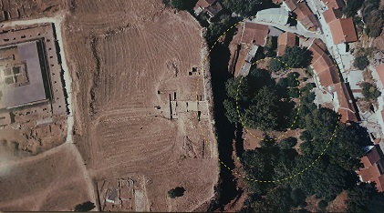

Uno de los yacimientos arqueológicos
más importantes de Portugal, Conímbriga tuvo origen en un castro celta
de la tribu de los Conii, a finales de la Edad de Hierro. Fue ocupada
por los romanos desde 139 a.e.c. En los siglos I-II la ciudad conoció su
máximo esplendor cuando se construyeron las termas públicas y el Foro.
Pertenecía administrativamente al Conventus Scallabitanus de la
provincia romana de Lusitania. Destaca la belleza de los mosaicos de Conímbriga. Ver video Puerta y Murallas Al yacimiento accedemos por la calzada romana de Olisipo a Bracara Augusta, que discurría por la ciudad de Coimbra. La Muralla defensiva es del siglo IV. Con un recorrido de 1,5km sustituye y refuerza la muralla de época de Augusto. Lo que no impidió el asalto de la ciudad por los suevos, en 468. Con la construcción de la muralla se abandonó la zona de la puerta sur que había sido habitada desde el siglo I. Las tiendas, las casas y las termas fueron abandonadas y en el siglo V se reutilizó como necrópolis.
A la derecha de la calzada se localiza la casa de los Repuxos. Una de las más bellas, con peristilo central y un gran lago. Se construyó en el siglo II sobre otra edificación del siglo I conserva las habitaciones subterráneas y una de las habitaciones romanas más famosa de Portugal. Destacan sus mosaicos. Abandonada y demolida con la construcción de la muralla. Excavada parcialmente y restaurada 1939-53. Ver video Casa de los Repuxos

A la izquierda de la calzada podemos visitar, las Tiendas al sur de la calzada, la casa de la Cruz Esvástica, la casa de los Esqueletos, las termas de la Muralla y la Muralla. La casa de la Cruz Esvástica pertenecía una familia acomodada. Data del siglo I, reformada en el siglo II. Los mosaicos datan de mediados del siglo III. Posteriormente la casa fue demolida para construir la muralla. Los romanos consideraban la cruz esvástica como un símbolo solar de buena suerte. la casa fue escavada y restaurada en 1940-50. Ver video Casas exteriores y Termas de la Muralla
La casa de los Esqueletos, un buen ejemplo de residencia privada de la que destaca su peristilo. Data del siglo II y fue decorada con mosaicos en el siglo III. Demolida con la contracción de la muralla, en época bajo imperial fue usada como necrópolis. Excavada en 1940-60.
Las termas de la Muralla se construyeron en torno al 77, cuando
la ciudad adquirió su estatus municipal bajo el mandato de Vespasiano. Destaca
el laconicum, estancia circular calentada por un horno independiente con forma
de L y decorada con losas de caliza blanca. Excavadas en 1940-44.
En Conímbriga conocen tres conjuntos termales: las de la Muralla, las Grandes Termas del Sur y las del Acueducto.
El Foro de Conímbriga
fue construido en época Flavia. El edificio central era el templo, dedicado al culto imperial. Se
edificó sobre un barrio indígena. Es uno de los restos pre-romanos mejor
conservados. Son dos casas con patio central, construida con adobe. A finales
del siglo I las obras de remodelación soterraron esta zona residencial. El foro
estaba en el centro urbano de la ciudad, un área ligeramente más alta que el
resto de la ciudad. Excavado en 1964-71.
 Ver video Casas interiores y Foro La casa de Cantaber es una de las mayores de Conímbriga, con termas privadas, perteneció a un aristócrata del siglo V. la mayor casa de la ciudad, 3620m2. Construida a finales del siglo I, estuvo en uso asta la Edad Media. En la fachada norte tenia un pórtico monumental, abierto a una plaza. Con unas 40 habitaciones, que se distribuyen en 5 conjuntos con sus respectivos peristilos. Excavada en 1930.

La casa de Tancinus se localiza junto a la muralla, existía antes de la basílica paleocristiana de Conímbriga. Llamada así por la pequeña lápida encontrada en sus paredes. Residencia mediana con un pequeño peristilo.

La casa del tridente y la espada fue excavada en 1936-62. Es una casa de tamaño medio. Es un conjunto de tres recintos integrados en una casa más grande, que sin embargo son independientes. El mosaico formaba parte del cubículo que daba al peristilo. El mosaico se cubrió para protegerlo y en enero de 2018 se descubrió, limpió y digitalizó. Foto: http://www.conimbriga.gov.pt/index.html

La ínsula del Acueducto era un edificio residencial y comercial que agrupaba varias habitaciones y establecimientos de modestas dimensiones. Data del siglo I. Destaca su criptopórtico central que mas tarde se transformo en una cisterna. Excavado en 1930-35.

El Acueducto recorre una distancia de 3.400m. desde un embalse localizado en Alcabideque el agua era conducida hasta Conimbriga.

Las Termas del Acueducto son de pequeñas dimensiones, excavadas en 1934. Situadas junto al castellun del acueducto, datan de finales del siglo II. las termas al construir la muralla se remodelaron, reduciendo su tamaño. Se conserva el frigidarium, alguna habitación climatizada y el horno.

Las Grandes Termas del Sur es una copia de las termas imperiales romanas. Zona termal y espacios abiertos dedicados al deporte. Es un gran rectángulo perpendicular al río de los Moros. Se edificaron sobre un recinto termal más antiguo de época de Augusto. Se conserva un mosaico, posiblemente el más antiguo de la ciudad y una piscina de agua fría. Bajo la palestra de la termas, de época de Trajano, se hallan los restos de unas casas de adobe del siglo IV a.e.c. Ver video Grandes Termas del Sur
El edificio del viaducto fue construido sobre la calzada que se dirigía a Aeminium. Excavado en 1930-40. No se sabe su función.

El anfiteatro de Conímbriga se conserva debajo de las casas de Condeixa-a-Velha y bajo los escombros de su demolición. Con unas medidas de unos 90 por 60m y una capacidad para más de 4000 espectadores. Construido al final del período julio-claudio, aprovechando un cañón natural que rodeaba la ciudad desde el norte. Destruido y usado como cantera para construir la muralla. Foto: Museo.

En el Museo de Conimbriga, fundado en 1962, se exhiben los objetos arqueológicos hallados en las excavaciones que se han realizado en el yacimiento.
|
||||||||||||||||||||||||||||||||||||